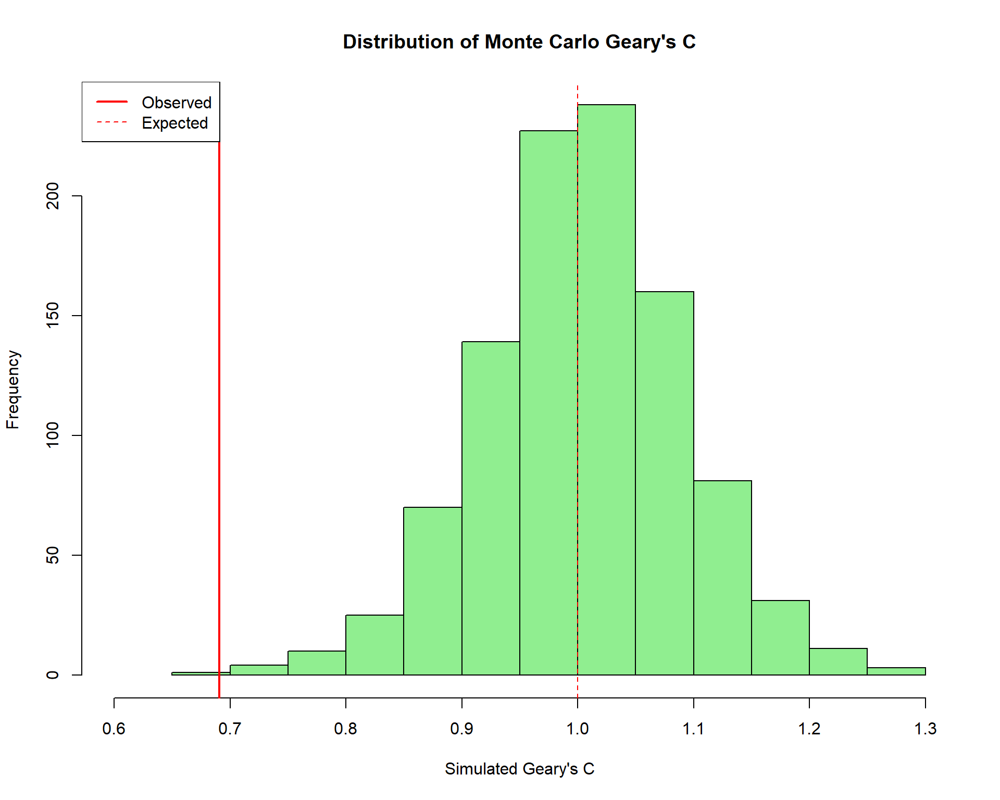
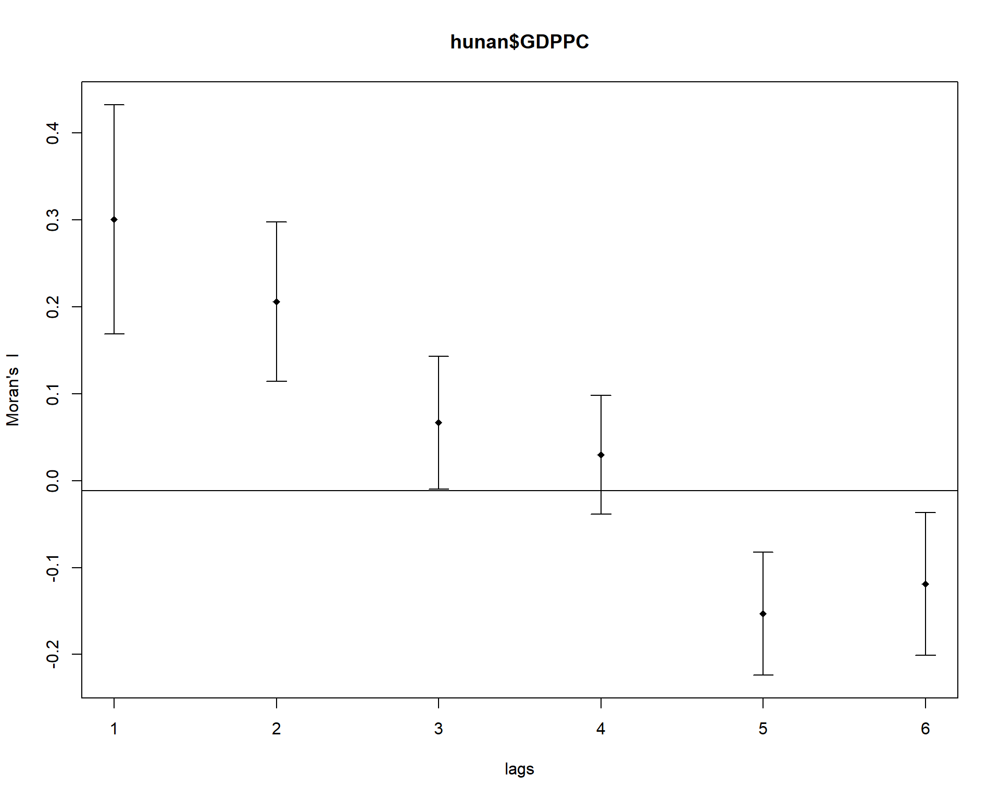

pacman::p_load(sf, spdep, tmap, tidyverse)Hands-on Exercise 05a: Global Measures of Spatial Autocorrelation
1 Overview
In this hands-on exercise, you will learn how to compute Global Measures of Spatial Autocorrelation (GMSA) by using spdep package. By the end of this hands-on exercise, you will be able to:
- Import geospatial data using appropriate function(s) of sf package
- Import csv file using appropriate function of readr package
- Perform relational join using appropriate join function of dplyr package
- Compute Global Spatial Autocorrelation (GSA) statistics by using appropriate functions of spdep package
- Plot Moran scatterplot
- Compute and plot spatial correlogram using appropriate function of spdep package
- Provide statistically correct interpretation of GSA statistics
1.1 The Analytical Question
In spatial policy, one of the main development objectives of the local government and planners is to ensure equal distribution of development in the province. Our task in this study, hence, is to apply appropriate spatial statistical methods to discover if development is evenly distributed geographically.
If the answer is No, then our next question will be “is there sign of spatial clustering?”. And, if the answer for this question is yes, then our next question will be “where are these clusters?”
In this case study, we are interested to examine the spatial pattern of a selected development indicator (i.e. GDP per capita) of Hunan Province, People’s Republic of China.
1.2 The Study Area and Data
Two data sets will be used in this hands-on exercise:
- Hunan province administrative boundary layer at county level: This is a geospatial data set in ESRI shapefile format
- Hunan_2012.csv: This csv file contains selected Hunan’s local development indicators in 2012
2 Getting Started
2.1 Setting the Analytical Tools
Before we get started, we need to ensure that spdep, sf, tmap and tidyverse packages are installed and loaded.
- sf is used for importing and handling geospatial data in R
- tidyverse is mainly used for wrangling attribute data in R
- spdep will be used to compute spatial weights, global and local spatial autocorrelation statistics
- tmap will be used to prepare cartographic quality choropleth maps
3 Getting the Data Into R Environment
In this section, you will learn how to bring a geospatial data and its associated attribute table into R environment. The geospatial data is in ESRI shapefile format and the attribute table is in csv format.
3.1 Import shapefile into R environment
The code chunk below uses st_read() of sf package to import Hunan shapefile into R. The imported shapefile will be simple features object of sf.
Show code
hunan <- st_read(dsn = "data/geospatial",
layer = "Hunan")Reading layer `Hunan' from data source
`C:\Users\HOPE\Desktop\ISSS626\Hands-on_Ex\Hands-on_ex05\data\geospatial'
using driver `ESRI Shapefile'
Simple feature collection with 88 features and 7 fields
Geometry type: POLYGON
Dimension: XY
Bounding box: xmin: 108.7831 ymin: 24.6342 xmax: 114.2544 ymax: 30.12812
Geodetic CRS: WGS 843.2 Import csv file into R environment
Next, we will import Hunan_2012.csv into R by using read_csv() of readr package. The output is R data frame class.
Show code
hunan2012 <- read_csv("data/aspatial/Hunan_2012.csv", show_col_types = FALSE)
# Check the data structure
glimpse(hunan2012)Rows: 88
Columns: 29
$ County <chr> "Anhua", "Anren", "Anxiang", "Baojing", "Chaling", "Changn…
$ City <chr> "Yiyang", "Chenzhou", "Changde", "Hunan West", "Zhuzhou", …
$ avg_wage <dbl> 30544, 28058, 31935, 30843, 31251, 28518, 54540, 28597, 33…
$ deposite <dbl> 10967.0, 4598.9, 5517.2, 2250.0, 8241.4, 10860.0, 24332.0,…
$ FAI <dbl> 6831.7, 6386.1, 3541.0, 1005.4, 6508.4, 7920.0, 33624.0, 1…
$ Gov_Rev <dbl> 456.72, 220.57, 243.64, 192.59, 620.19, 769.86, 5350.00, 1…
$ Gov_Exp <dbl> 2703.0, 1454.7, 1779.5, 1379.1, 1947.0, 2631.6, 7885.5, 11…
$ GDP <dbl> 13225.0, 4941.2, 12482.0, 4087.9, 11585.0, 19886.0, 88009.…
$ GDPPC <dbl> 14567, 12761, 23667, 14563, 20078, 24418, 88656, 10132, 17…
$ GIO <dbl> 9276.90, 4189.20, 5108.90, 3623.50, 9157.70, 37392.00, 513…
$ Loan <dbl> 3954.90, 2555.30, 2806.90, 1253.70, 4287.40, 4242.80, 4053…
$ NIPCR <dbl> 3528.3, 3271.8, 7693.7, 4191.3, 3887.7, 9528.0, 17070.0, 3…
$ Bed <dbl> 2718, 970, 1931, 927, 1449, 3605, 3310, 582, 2170, 2179, 1…
$ Emp <dbl> 494.310, 290.820, 336.390, 195.170, 330.290, 548.610, 670.…
$ EmpR <dbl> 441.4, 255.4, 270.5, 145.6, 299.0, 415.1, 452.0, 127.6, 21…
$ EmpRT <dbl> 338.0, 99.4, 205.9, 116.4, 154.0, 273.7, 219.4, 94.4, 174.…
$ Pri_Stu <dbl> 54.175, 33.171, 19.584, 19.249, 33.906, 81.831, 59.151, 18…
$ Sec_Stu <dbl> 32.830, 17.505, 17.819, 11.831, 20.548, 44.485, 39.685, 7.…
$ Household <dbl> 290.4, 104.6, 148.1, 73.2, 148.7, 211.2, 300.3, 76.1, 139.…
$ Household_R <dbl> 234.5, 121.9, 135.4, 69.9, 139.4, 211.7, 248.4, 59.6, 110.…
$ NOIP <dbl> 101, 34, 53, 18, 106, 115, 214, 17, 55, 70, 44, 84, 74, 17…
$ Pop_R <dbl> 670.3, 243.2, 346.0, 184.1, 301.6, 448.2, 475.1, 189.6, 31…
$ RSCG <dbl> 5760.60, 2386.40, 3957.90, 768.04, 4009.50, 5220.40, 22604…
$ Pop_T <dbl> 910.8, 388.7, 528.3, 281.3, 578.4, 816.3, 998.6, 256.7, 45…
$ Agri <dbl> 4942.253, 2357.764, 4524.410, 1118.561, 3793.550, 6430.782…
$ Service <dbl> 5414.5, 3814.1, 14100.0, 541.8, 5444.0, 13074.6, 17726.6, …
$ Disp_Inc <dbl> 12373, 16072, 16610, 13455, 20461, 20868, 183252, 12379, 1…
$ RORP <dbl> 0.7359464, 0.6256753, 0.6549309, 0.6544614, 0.5214385, 0.5…
$ ROREmp <dbl> 0.8929619, 0.8782065, 0.8041262, 0.7460163, 0.9052651, 0.7…3.3 Performing relational join
The code chunk below will be used to update the attribute table of hunan’s SpatialPolygonsDataFrame with the attribute fields of hunan2012 dataframe. This is performed by using left_join() of dplyr package.
Show code
hunan <- left_join(hunan, hunan2012, by = c("County" = "County"))
# Check the result
glimpse(hunan)Rows: 88
Columns: 36
$ NAME_2 <chr> "Changde", "Changde", "Changde", "Changde", "Changde", "Ch…
$ ID_3 <int> 21098, 21100, 21101, 21102, 21103, 21104, 21109, 21110, 21…
$ NAME_3 <chr> "Anxiang", "Hanshou", "Jinshi", "Li", "Linli", "Shimen", "…
$ ENGTYPE_3 <chr> "County", "County", "County City", "County", "County", "Co…
$ Shape_Leng <dbl> 1.869074, 2.360691, 1.425620, 3.474325, 2.289506, 4.171918…
$ Shape_Area <dbl> 0.10056190, 0.19978745, 0.05302413, 0.18908121, 0.11450357…
$ County <chr> "Anxiang", "Hanshou", "Jinshi", "Li", "Linli", "Shimen", "…
$ City <chr> "Changde", "Changde", "Changde", "Changde", "Changde", "Ch…
$ avg_wage <dbl> 31935, 32265, 28692, 32541, 32667, 33261, 40446, 40744, 45…
$ deposite <dbl> 5517.2, 7979.0, 4581.7, 13487.0, 564.1, 8334.4, 21415.0, 1…
$ FAI <dbl> 3541.0, 8665.0, 4777.0, 16066.0, 7781.2, 10531.0, 43599.0,…
$ Gov_Rev <dbl> 243.64, 386.13, 373.31, 709.61, 336.86, 548.33, 2473.10, 2…
$ Gov_Exp <dbl> 1779.5, 2062.4, 1148.4, 2459.5, 1538.7, 2178.8, 4605.5, 48…
$ GDP <dbl> 12482.0, 15788.0, 8706.9, 20322.0, 10355.0, 16293.0, 81113…
$ GDPPC <dbl> 23667, 20981, 34592, 24473, 25554, 27137, 63118, 62202, 70…
$ GIO <dbl> 5108.9, 13491.0, 10935.0, 18402.0, 8214.0, 17795.0, 99254.…
$ Loan <dbl> 2806.90, 4550.00, 2242.00, 6748.00, 358.00, 6026.50, 23408…
$ NIPCR <dbl> 7693.7, 8269.9, 8169.9, 8377.0, 8143.1, 6156.0, 15719.0, 1…
$ Bed <dbl> 1931, 2560, 848, 2038, 1440, 2502, 6225, 4351, 1678, 970, …
$ Emp <dbl> 336.39, 456.78, 122.78, 513.44, 307.36, 392.05, 919.62, 85…
$ EmpR <dbl> 270.5, 388.8, 82.1, 426.8, 272.2, 329.6, 721.4, 757.6, 268…
$ EmpRT <dbl> 205.9, 246.7, 61.7, 227.1, 100.8, 193.8, 300.1, 318.3, 131…
$ Pri_Stu <dbl> 19.584, 42.097, 8.723, 38.975, 23.286, 29.245, 90.978, 80.…
$ Sec_Stu <dbl> 17.819, 33.029, 7.592, 33.938, 18.943, 26.104, 58.819, 68.…
$ Household <dbl> 148.1, 240.2, 81.9, 268.5, 129.1, 190.6, 374.8, 391.7, 161…
$ Household_R <dbl> 135.4, 208.7, 43.7, 256.0, 157.2, 184.7, 369.8, 369.6, 154…
$ NOIP <dbl> 53, 95, 77, 96, 99, 122, 733, 552, 314, 34, 14, 100, 67, 4…
$ Pop_R <dbl> 346.0, 553.2, 92.4, 539.7, 246.6, 399.2, 642.7, 655.5, 266…
$ RSCG <dbl> 3957.9, 4460.5, 3683.0, 7110.2, 3604.9, 6490.7, 16233.0, 1…
$ Pop_T <dbl> 528.3, 804.6, 251.8, 832.5, 409.3, 600.5, 1285.5, 1186.5, …
$ Agri <dbl> 4524.410, 6545.350, 2562.460, 7562.340, 3583.910, 5266.510…
$ Service <dbl> 14100.0, 17727.0, 7525.0, 53160.0, 7031.0, 6981.0, 26617.8…
$ Disp_Inc <dbl> 16610, 18925, 19498, 18985, 18604, 19275, 27345, 24020, 27…
$ RORP <dbl> 0.6549309, 0.6875466, 0.3669579, 0.6482883, 0.6024921, 0.6…
$ ROREmp <dbl> 0.8041262, 0.8511756, 0.6686757, 0.8312558, 0.8856065, 0.8…
$ geometry <POLYGON [°]> POLYGON ((112.0625 29.75523..., POLYGON ((112.2288…3.4 Visualising Regional Development Indicator
Now, we are going to prepare a basemap and a choropleth map showing the distribution of GDPPC 2012 by using qtm() of tmap package.
Show code
equal <- tm_shape(hunan) +
tm_fill("GDPPC",
n = 5,
style = "equal") +
tm_borders(alpha = 0.5) +
tm_layout(main.title = "Equal interval classification")
quantile <- tm_shape(hunan) +
tm_fill("GDPPC",
n = 5,
style = "quantile") +
tm_borders(alpha = 0.5) +
tm_layout(main.title = "Quantile classification")
tmap_arrange(equal,
quantile,
asp = 1,
ncol = 2)
4 Global Measures of Spatial Autocorrelation
In this section, you will learn how to compute global spatial autocorrelation statistics and to perform spatial complete randomness test for global spatial autocorrelation.
4.1 Computing Contiguity Spatial Weights
Before we can compute the global spatial autocorrelation statistics, we need to construct a spatial weights of the study area. The spatial weights is used to define the neighbourhood relationships between the geographical units (i.e. county) in the study area.
In the code chunk below, poly2nb() of spdep package is used to compute contiguity weight matrices for the study area. This function builds a neighbours list based on regions with contiguous boundaries.
Show code
wm_q <- poly2nb(hunan, queen = TRUE)
summary(wm_q)Neighbour list object:
Number of regions: 88
Number of nonzero links: 448
Percentage nonzero weights: 5.785124
Average number of links: 5.090909
Link number distribution:
1 2 3 4 5 6 7 8 9 11
2 2 12 16 24 14 11 4 2 1
2 least connected regions:
30 65 with 1 link
1 most connected region:
85 with 11 linksThe summary report above shows that: - There are 88 area units in Hunan - The most connected area unit has 11 neighbours - There are two area units with only one neighbour
4.2 Row-standardised weights matrix
Next, we need to assign weights to each neighboring polygon. In our case, each neighboring polygon will be assigned equal weight (style=“W”). This is accomplished by assigning the fraction 1/(#ofneighbors) to each neighboring county then summing the weighted income values.
Show code
rswm_q <- nb2listw(wm_q,
style = "W",
zero.policy = TRUE)
rswm_qCharacteristics of weights list object:
Neighbour list object:
Number of regions: 88
Number of nonzero links: 448
Percentage nonzero weights: 5.785124
Average number of links: 5.090909
Weights style: W
Weights constants summary:
n nn S0 S1 S2
W 88 7744 88 37.86334 365.91475 Global Measures of Spatial Autocorrelation: Moran’s I
In this section, you will learn how to perform Moran’s I statistics testing by using moran.test() of spdep.
5.1 Moran’s I test
The code chunk below performs Moran’s I statistical testing using moran.test() of spdep.
Show code
moran.test(hunan$GDPPC,
listw = rswm_q,
zero.policy = TRUE,
na.action = na.omit)
Moran I test under randomisation
data: hunan$GDPPC
weights: rswm_q
Moran I statistic standard deviate = 4.7351, p-value = 1.095e-06
alternative hypothesis: greater
sample estimates:
Moran I statistic Expectation Variance
0.300749970 -0.011494253 0.004348351 5.1.1 Statistical Conclusion
The Moran’s I test results show: - Moran I statistic: 0.3008 (positive value indicates positive spatial autocorrelation) - Expected value: -0.0115 (expected value under null hypothesis of no spatial autocorrelation) - Variance: 0.0043 - Standard deviate: 4.7351 (Z-score) - P-value: 1.095e-06 (highly significant)
Since the p-value is much less than 0.05, we reject the null hypothesis of spatial randomness. The positive Moran’s I value indicates that similar values tend to cluster together - there is significant positive spatial autocorrelation in GDPPC across Hunan counties.
5.2 Computing Monte Carlo Moran’s I
The code chunk below performs permutation test for Moran’s I statistic by using moran.mc() of spdep. A total of 1000 simulations will be performed.
Show code
set.seed(1234)
bperm <- moran.mc(hunan$GDPPC,
listw = rswm_q,
nsim = 999,
zero.policy = TRUE,
na.action = na.omit)
bperm
Monte-Carlo simulation of Moran I
data: hunan$GDPPC
weights: rswm_q
number of simulations + 1: 1000
statistic = 0.30075, observed rank = 1000, p-value = 0.001
alternative hypothesis: greater5.2.1 Statistical Conclusion
The Monte Carlo simulation results confirm our earlier findings: - Observed Moran I: 0.3008 - Observed rank: 1000 (highest among all simulations) - P-value: 0.001
This means that out of 1000 simulations, the observed Moran’s I value is the highest, giving strong evidence against spatial randomness.
5.3 Visualising Monte Carlo Moran’s I
It is always a good practice to examine the simulated Moran’s I test statistics in greater detail. This can be achieved by plotting the distribution of the statistical values as a histogram.
Show code
# Calculate mean and variance
mean(bperm$res[1:999])[1] -0.01504572Show code
var(bperm$res[1:999])[1] 0.004371574Show code
# Summary statistics
summary(bperm$res[1:999]) Min. 1st Qu. Median Mean 3rd Qu. Max.
-0.18339 -0.06168 -0.02125 -0.01505 0.02611 0.27593 Show code
# Create histogram
hist(bperm$res,
freq = TRUE,
breaks = 20,
xlab = "Simulated Moran's I",
main = "Distribution of Monte Carlo Moran's I",
col = "lightblue",
xlim = c(-0.20, 0.35))
abline(v = 0,
col = "red",
lty = 2)
abline(v = bperm$statistic,
col = "red",
lwd = 2)
legend("topright",
legend = c("Observed", "Expected"),
col = c("red", "red"),
lty = c(1, 2),
lwd = c(2, 1))
5.3.1 Statistical Observation
The histogram shows that: - The distribution of simulated Moran’s I values is approximately normal, centered around -0.015 - The observed value (0.3008) is far in the right tail of the distribution - This visual confirmation supports our conclusion of significant positive spatial autocorrelation
6 Global Measures of Spatial Autocorrelation: Geary’s C
In this section, you will learn how to perform Geary’s C statistics testing by using appropriate functions of spdep package.
6.1 Geary’s C test
The code chunk below performs Geary’s C test for spatial autocorrelation by using geary.test() of spdep.
Show code
geary.test(hunan$GDPPC, listw = rswm_q)
Geary C test under randomisation
data: hunan$GDPPC
weights: rswm_q
Geary C statistic standard deviate = 3.6108, p-value = 0.0001526
alternative hypothesis: Expectation greater than statistic
sample estimates:
Geary C statistic Expectation Variance
0.6907223 1.0000000 0.0073364 6.1.1 Statistical Conclusion
The Geary’s C test results show: - Geary C statistic: 0.6907 (values less than 1 indicate positive spatial autocorrelation) - Expected value: 1.0000 (expected value under null hypothesis) - Variance: 0.0073 - Standard deviate: 3.6108 - P-value: 0.0001526
Since the p-value is less than 0.05 and the Geary’s C value (0.69) is less than 1, we have evidence of positive spatial autocorrelation, confirming our Moran’s I results.
6.2 Computing Monte Carlo Geary’s C
The code chunk below performs permutation test for Geary’s C statistic by using geary.mc() of spdep.
Show code
set.seed(1234)
bperm_c <- geary.mc(hunan$GDPPC,
listw = rswm_q,
nsim = 999)
bperm_c
Monte-Carlo simulation of Geary C
data: hunan$GDPPC
weights: rswm_q
number of simulations + 1: 1000
statistic = 0.69072, observed rank = 1, p-value = 0.001
alternative hypothesis: greater6.2.1 Statistical Conclusion
The Monte Carlo simulation for Geary’s C shows: - Observed Geary C: 0.6907 - Observed rank: 1 (lowest among all simulations) - P-value: 0.001
This confirms significant positive spatial autocorrelation (clustering of similar values).
6.3 Visualising the Monte Carlo Geary’s C
Next, we will plot a histogram to reveal the distribution of the simulated values.
Show code
# Calculate mean and variance
mean(bperm_c$res[1:999])[1] 1.004402Show code
var(bperm_c$res[1:999])[1] 0.007436493Show code
# Summary statistics
summary(bperm_c$res[1:999]) Min. 1st Qu. Median Mean 3rd Qu. Max.
0.7142 0.9502 1.0052 1.0044 1.0595 1.2722 Show code
# Create histogram
hist(bperm_c$res,
freq = TRUE,
breaks = 20,
xlab = "Simulated Geary's C",
main = "Distribution of Monte Carlo Geary's C",
col = "lightgreen",
xlim = c(0.6, 1.3))
abline(v = 1,
col = "red",
lty = 2)
abline(v = bperm_c$statistic,
col = "red",
lwd = 2)
legend("topleft",
legend = c("Observed", "Expected"),
col = c("red", "red"),
lty = c(1, 2),
lwd = c(2, 1))
6.3.1 Statistical Observation
The histogram shows: - The distribution of simulated Geary’s C values is centered around 1.004 - The observed value (0.6907) is in the extreme left tail - This provides strong visual evidence of positive spatial autocorrelation
7 Spatial Correlogram
Spatial correlograms are great to examine patterns of spatial autocorrelation in your data or model residuals. They show how correlated are pairs of spatial observations when you increase the distance (lag) between them.
7.1 Compute Moran’s I correlogram
In the code chunk below, sp.correlogram() of spdep package is used to compute a 6-lag spatial correlogram of GDPPC. The global spatial autocorrelation used is Moran’s I.
Show code
MI_corr <- sp.correlogram(wm_q,
hunan$GDPPC,
order = 6,
method = "I",
style = "W")
plot(MI_corr)
By plotting the output might not allow us to provide complete interpretation. Hence, it is important to examine the full analysis report.
Show code
print(MI_corr)Spatial correlogram for hunan$GDPPC
method: Moran's I
estimate expectation variance standard deviate Pr(I) two sided
1 (88) 0.3007500 -0.0114943 0.0043484 4.7351 2.189e-06 ***
2 (88) 0.2060084 -0.0114943 0.0020962 4.7505 2.029e-06 ***
3 (88) 0.0668273 -0.0114943 0.0014602 2.0496 0.040400 *
4 (88) 0.0299470 -0.0114943 0.0011717 1.2107 0.226015
5 (88) -0.1530471 -0.0114943 0.0012440 -4.0134 5.984e-05 ***
6 (88) -0.1187070 -0.0114943 0.0016791 -2.6164 0.008886 **
---
Signif. codes: 0 '***' 0.001 '**' 0.01 '*' 0.05 '.' 0.1 ' ' 17.1.1 Statistical Observation
The Moran’s I correlogram shows: - Lag 1-2: Significant positive spatial autocorrelation (p < 0.001) - Lag 3: Weakly significant positive autocorrelation (p = 0.04) - Lag 4: No significant autocorrelation (p = 0.226) - Lag 5: Significant negative spatial autocorrelation (p < 0.001) - Lag 6: Significant negative spatial autocorrelation (p < 0.01)
This pattern suggests that spatial clustering is strongest at immediate neighbors (lag 1-2), weakens at intermediate distances, and becomes negative (dissimilar values) at greater distances.
7.2 Compute Geary’s C correlogram and plot
In the code chunk below, sp.correlogram() of spdep package is used to compute a 6-lag spatial correlogram of GDPPC. The global spatial autocorrelation used is Geary’s C.
Show code
GC_corr <- sp.correlogram(wm_q,
hunan$GDPPC,
order = 6,
method = "C",
style = "W")
plot(GC_corr)
Similar to the previous step, we will print out the analysis report.
Show code
print(GC_corr)Spatial correlogram for hunan$GDPPC
method: Geary's C
estimate expectation variance standard deviate Pr(I) two sided
1 (88) 0.6907223 1.0000000 0.0073364 -3.6108 0.0003052 ***
2 (88) 0.7630197 1.0000000 0.0049126 -3.3811 0.0007220 ***
3 (88) 0.9397299 1.0000000 0.0049005 -0.8610 0.3892612
4 (88) 1.0098462 1.0000000 0.0039631 0.1564 0.8757128
5 (88) 1.2008204 1.0000000 0.0035568 3.3673 0.0007592 ***
6 (88) 1.0773386 1.0000000 0.0058042 1.0151 0.3100407
---
Signif. codes: 0 '***' 0.001 '**' 0.01 '*' 0.05 '.' 0.1 ' ' 17.2.1 Statistical Observation
The Geary’s C correlogram shows: - Lag 1-2: Significant positive spatial autocorrelation (C < 1, p < 0.001) - Lag 3-4: No significant autocorrelation (C ≈ 1, p > 0.05) - Lag 5: Significant negative spatial autocorrelation (C > 1, p < 0.001) - Lag 6: No significant autocorrelation
This pattern confirms the Moran’s I findings: strong local clustering that weakens with distance and becomes negative at lag 5.
8 Summary
In this hands-on exercise, we have:
Detected significant positive global spatial autocorrelation in GDP per capita across Hunan counties using both Moran’s I (0.3008) and Geary’s C (0.6907) statistics
Confirmed these findings through Monte Carlo simulations (1000 permutations), showing that the observed patterns are highly unlikely to occur by chance (p < 0.001)
Examined the spatial structure through correlograms, revealing that:
- Spatial clustering is strongest among immediate neighbors
- The clustering effect weakens with distance
- At lag 5, there is significant negative autocorrelation (dissimilar values)
Statistical Conclusion: The GDP per capita in Hunan Province shows significant spatial clustering - counties with high GDP per capita tend to be surrounded by other high-value counties, and vice versa. This suggests that economic development in Hunan is not evenly distributed but rather shows clear patterns of spatial clustering.
The next step would be to identify where these clusters are located, which will be addressed in the local spatial autocorrelation analysis (Exercise 05b).